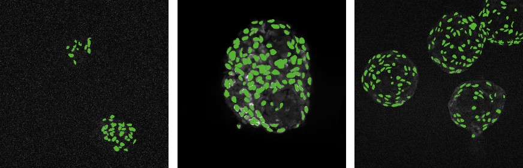
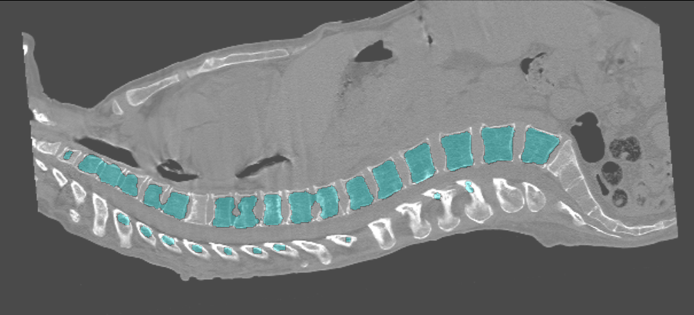
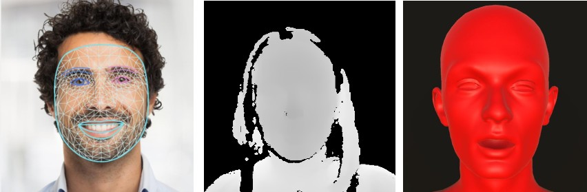
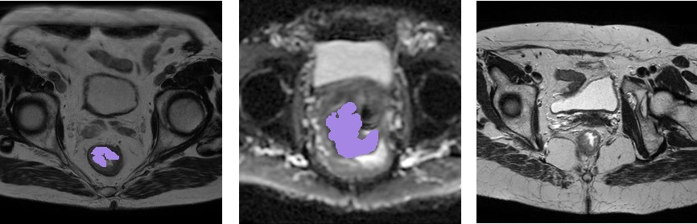
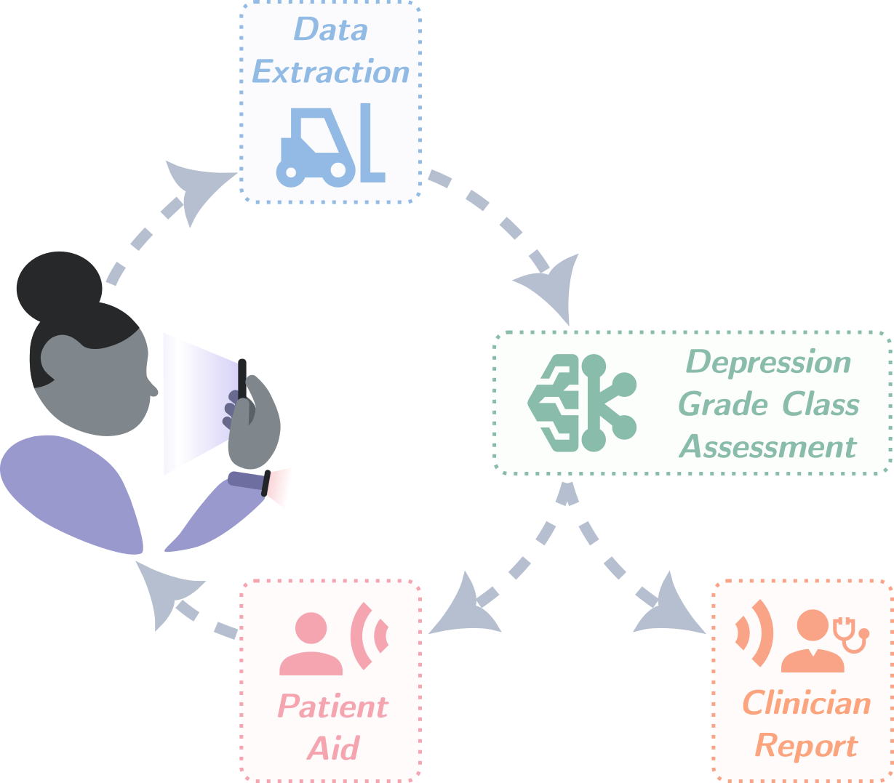
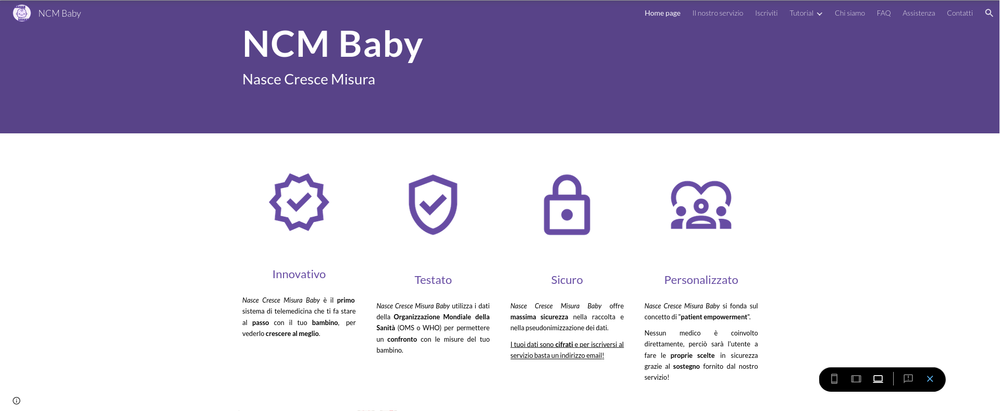

About
Bridging between biomedical research and artificial intelligence, merging clinical insights with cutting-edge technology. I am specialized on the application of modern AI techniques to biomedical data, comprehending medical images, clinical information and biological signals, with a specific focus on physics-informed models for medical forecasting.
Experience
Education
Master in Biomedical Engineering (eHealth track)
Politecnico di Torino (Turin, Italy)
Bachelor in Biomedical Engineering
Politecnico di Torino (Turin, Italy)
Master Thesis
Deep learning-based model for Age-related Macular Degeneration forecasting using retinal fundus images
Deep Learning Projects

Cardiosphere cell segmentation from microscopy images
Implementation of a full image processing pipeline (pre-processing, deep learning segmentation, post-processing) on fluorescence microscopy images using MMSegmentation and Detectron2 models.

Backbone segmentation from CT-scan images
Implementation of a full image processing pipeline (pre-processing, deep learning segmentation, post-processing) on back CT-scan images using MMSegmentation models
Machine Learning Projects

Low-stakes lies detection from face video acquisitions
Development of a lie detection app based on novel face video acquisitions during visual scene description, comprehending: an acquisition UI, a complete video processing pipeline based on MediaPipe (feature extraction, selection, ensemble machine learning classifiers) and explainability visualization using an ARKit Blendshapes model.

Rectal cancer CAD systems from T2 MRI/ADC images
Development of two CAD systems for segmentation and treatment response prediction implementing feature extraction (Radiomics-based), feature selection methods and various machine learning classifiers on T2-weighted MRI images and ADC maps.
Gait status prediction from lower limbs EMG signals
Development of a classifier for walk/run prediction using muscle synergies extracted from EMG signals, supported by MANOVA and PCA analysis and validated on an external independent dataset.
Target-reaching exergaming for muscle rehabilitation
Development of a domestic exergaming based on webcam acquisitions and body's center of mass estimation using OpenPose.
Prediction of ventilation weaning using clinical data
Application of data inputting, feature selection methods, machine learning classifiers and fuzzy logic to develop various classifiers for success prediction of mechanical ventilation weaning.
Miscellaneous Projects

Depression detection system using affective computing
Idealization of an hybrid deep / machine learning multimodal system for depression assessment using video speech acquisitions and heart data.
Pipeline software design for telemonitoring platform
UML process design and user interface modeling for an heart failure treatment telemonitoring platform.

Baby growth telemonitor platform for body measurements
Front and back-end development of a telemonitoring website for inputting and trend visualization of infants' body measurements.
Skills
Data Science
- Statistical Analysis
- Multimodality
- Classification
- Segmentation
- Forecasting
Machine Learning
- Feature Engineering
- Feature Selection
- Machine Learning Models
- Models Evaluation
Deep Learning
- Explainable AI
- Uncertainty Quantification
- Vision-Language Models
- Ordinary Differential Equations Neural Networks
Coding
Languages
- Python
- MATLAB
- R
- HTML
Python Libraries
- MatPlotLib
- MediaPipe
- MMEngine
- NumPy
- OpenCV
- Pandas
- PyRealSense2
- PyTorch
- SciKit-Image
- SciKit-Learn
- SciPy
Tools
- GIT
- Google Colab
- Kaggle
- Linux Environment
Software
Documents
- LaTeX
- Office Suite
Graphics and Design
- 3D Slicer
- Canva
- GIMP
- Inkscape
3D Modeling
- SolidWorks
- Unity